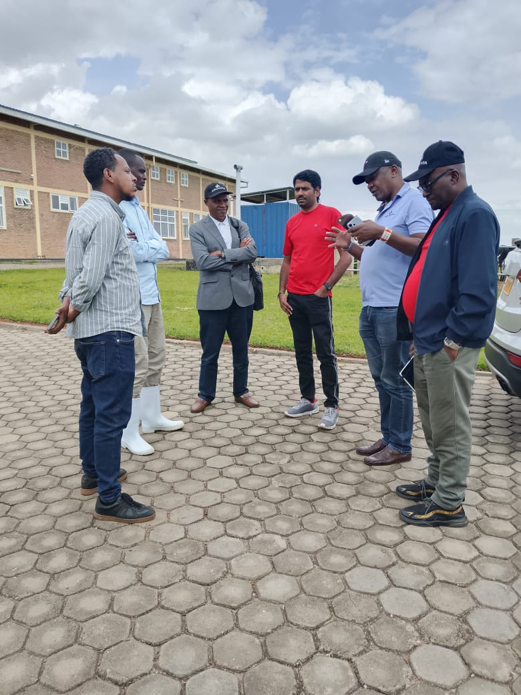
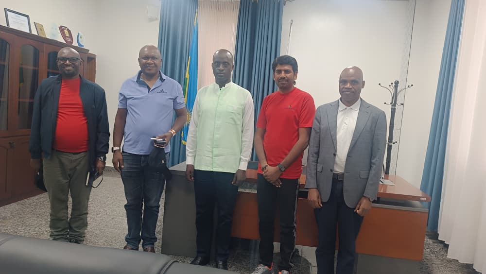
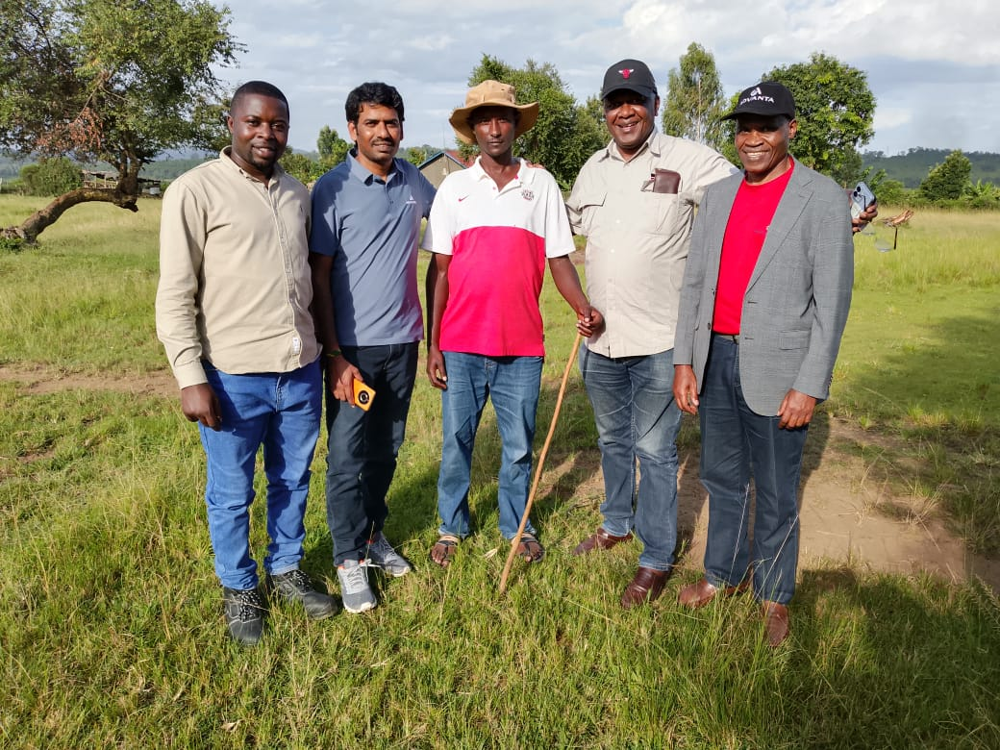
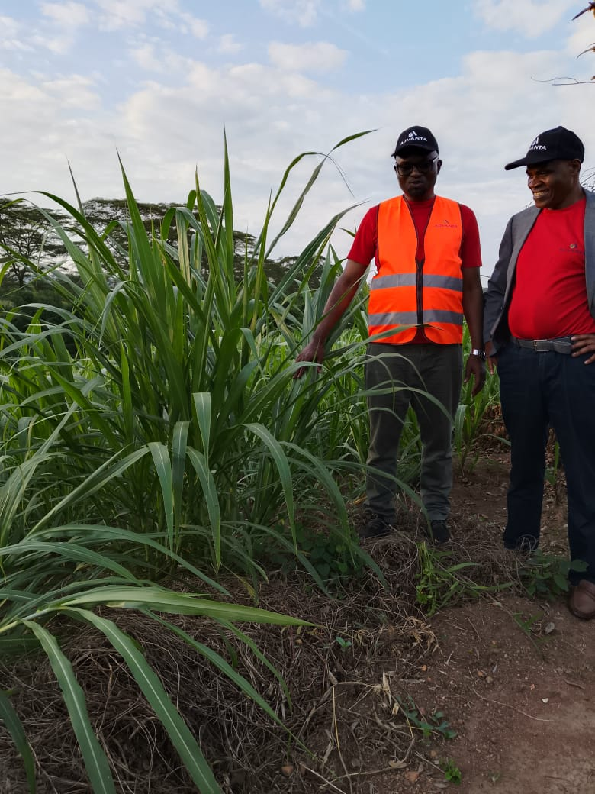

WOREX LTD (World Resources Exchange) is a premium integrated agribusiness enterprise revolutionizing livestock and aquaculture production through innovation, sustainability, and climate-smart farming.
We combine animal feed production, pig fattening, and fish farming into one seamless agricultural ecosystem that delivers high-quality products and sustainable value across Rwanda.
To provide affordable, high-quality animal feeds and protein products through efficient and sustainable production systems.
To become East Africa’s leading integrated livestock and aquaculture enterprise recognized for innovation and sustainability.
WOREX LTD is transforming dairy farming in Rwanda through climate-smart agriculture, sweet potato silage innovation, and farmer-centered livestock systems.
Dairy farmers in Nyagatare currently produce only 1–3 liters of milk per cow daily due to poor livestock nutrition and low-quality grazing systems.
WOREX LTD introduces improved sweet potato varieties for silage production to improve dairy nutrition, increase milk yields, and create export opportunities.
Multiply and distribute improved sweet potato planting materials.
Develop nutrient-rich silage systems for dairy cattle feeding.
Train 1,500 farmers in crop-livestock integration practices.
Evaluate milk yield, feed quality, and economic viability.
Target Milk Yield Per Cow/Day
Farmers to Be Trained
Months Project Duration
Project Investment Value
Leading project coordination, farmer mobilization, extension services, and market integration.
Providing improved sweet potato planting materials and technical agricultural support.
Supporting project financing, innovation, and international agricultural research collaboration.
WOREX LTD integrates digital agriculture technologies to monitor milk production, feed intake, animal health, and farm performance using AI-powered smart farming systems.
Digital monitoring for smarter dairy management.
Founded with a vision to strengthen Rwanda’s food security, WOREX LTD has grown into a trusted agribusiness partner serving farmers, traders, and institutions nationwide.
Our commitment to quality, sustainability, and climate-smart farming continues to drive agricultural transformation and economic growth in local communities.
Years Experience
Quality Commitment
Climate-Smart Practices
Every product meets rigorous quality standards.
We promote circular economy and eco-friendly farming systems.
Continuous improvement in agricultural production methods.
Transparent and honest relationships with stakeholders.
Supporting farmers and rural economic development.
WOREX LTD works closely with government institutions, private companies, development partners, and farming communities to improve livestock productivity and sustainable agriculture across Rwanda.

WOREX LTD, Luna Ltd, and Advanta Team met at Nyagatare Slaughterhouse to discuss strategic partnership opportunities aimed at strengthening livestock value chains and market access.

WOREX, the Mayor of Nyagatare District, and Advanta Team discussed collaborative initiatives to increase milk production using WOREX's Total Mixed Ration (TMR) feeding technology.

WOREX, Ripple Effect, local farmers, and Advanta Team explored sustainable solutions to fodder shortages and livestock feed security in farming communities.

The WOREX technical team visited the Nyagatare RAB Germplasm Station to assess Napier Juncao cultivars for improved fodder production and livestock nutrition.